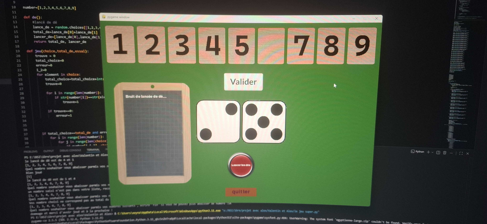

Le Concept
Développé en classe de Première NSI, ce projet consistait à recréer numériquement le célèbre jeu de société Shut The Box. Le but est de fermer le maximum de clapets numérotés en fonction du résultat d'un lancer de dés. C'est mon premier projet d'envergure mêlant logique pure et rendu graphique en temps réel.

Réalisation
- Moteur de Jeu : Utilisation de la boucle
while runningpour gérer les mises à jour de l'affichage à 60 FPS. - Gestion des collisions : Détection des clics de souris sur les clapets graphiques pour interagir avec le plateau.
- Logique des dés : Implémentation d'un générateur de nombres aléatoires et vérification mathématique des combinaisons possibles pour fermer les clapets.
- Travail d'équipe : Collaboration étroite en binôme pour séparer la logique du moteur de jeu et la conception visuelle des assets.